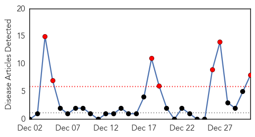
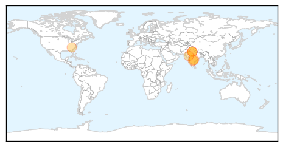
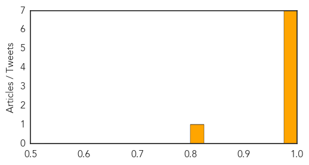

Swine Flu
30-Day Web Trend
7 alerts, 0 warnings

30-Day Twitter Trend
1 alerts, 0 warnings
Article Locations
Article Confidences
Top Articles:
- 0.999
- India swine flu news: Delhi reports 3 more cases
- 0.999
- Swine flu scare continues in Delhi, 3 more cases reported
- 0.997
- 'Severe' flu season leads to 20 deaths in SC
- 0.994
- 5 swine flu patients leave hospital, trigger fear of epidemic in Telangana
- 0.992
- 1 death, 10 new cases trigger swine flu epidemic alert in Telangana
- 0.991
- Three more swine flu cases in Delhi
- 0.990
- Swine flu epidemic alert in Telangana after one death, 10 new cases
- 0.816
- Swine flu cases in Delhi now 38
Top Tweets:
-
No tweets found for Dec 31, 2014
Hemmorhagic Fever
30-Day Web Trend
0 alerts, 0 warnings

30-Day Twitter Trend
0 alerts, 0 warnings

Article Locations

Article Confidences

Top Articles:
-
No articles found for Dec 31, 2014
Top Tweets:
-
No tweets found for Dec 31, 2014